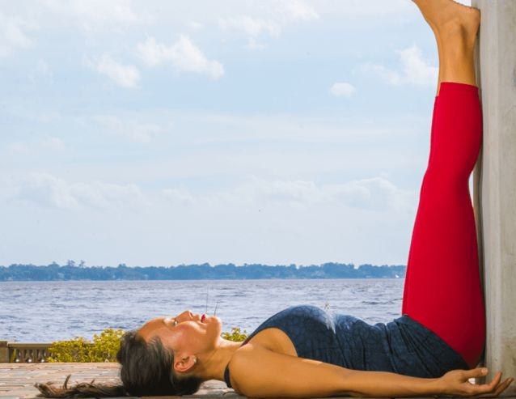

Bring your hips close (5–10 cm) to the wall and let your legs rest. Close your eyes, relax your body and progressively deepen your breathing. Concentrate on your breath, trying not to focus on any thought or concern. Rest in this pose for up to 5 minutes. This position is meant to be comfortable, relaxing and de-stressing.
